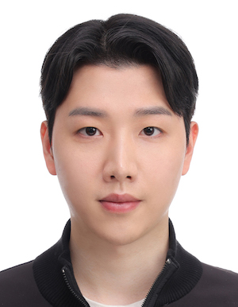

Hyunsoo Cho

location_on Seoul, Korea
email johyunsoo@europa.snu.ac.kr
insert_drive_file
Curriculum Vitae
Google Scholar
LinkedIn
I am a Postdoctoral researcher at Seoul National University (SNU) and a member of IDS Lab.
I am interested in natural language processing and machine learning, particularly in (1) anomaly detection, (2) leveraging large-language models, and (3) self-supervised learning.
Education
Selected Papers
-
CELDA: Leveraging Black-box Language Model as Enhanced Classifier without Labels.
Hyunsoo Cho, Youna Kim, Sang-goo Lee
ACL 2023
-
Probing Out-of-Distribution Robustness of Language Models with Parameter-Efficient Transfer Learning.
Hyunsoo Cho, Choonghyun Park, Junyeop Kim, Hyuhng Joon Kim, Kang Min Yoo, Sang-goo Lee
*SEM 2023
-
Prompt-Augmented Linear Probing: Scaling beyond the Limit of Few-shot In-Context Learners.
Hyunsoo Cho, Hyuhng Joon Kim, Junyeob Kim, Sang-Woo Lee, Sang-goo Lee, Kang Min Yoo, Taeuk Kim
AAAI 2023
-
Enhancing Out-of-Distribution Detection in Natural Language Understanding via Implicit Layer Ensemble.
Hyunsoo Cho, Choonghyun Park, Jaewook Kang, Kang Min Yoo, Taeuk Kim, Sang-goo Lee
Findings of EMNLP 2022
-
Ground-Truth Labels Matter: A Deeper Look into Input-Label Demonstrations.
Kang Min Yoo, Junyeob Kim, Hyuhng Joon Kim, Hyunsoo Cho, Hwiyeol Jo, Sang-Woo Lee, Sang-goo Lee, Taeuk Kim
EMNLP 2022
-
Self-Generated In-Context Learning: Leveraging Auto-regressive Language Models as a Demonstration Generator.
Hyuhng Joon Kim, Hyunsoo Cho, Junyeob Kim, Taeuk Kim, Kang Min Yoo, Sang-goo Lee
NAACL Workshop 2022 (LPLM)
-
Masked Contrastive Learning for Anomaly Detection.
Hyunsoo Cho, Jinseok Seol, Sang-goo Lee
IJCAI 2021